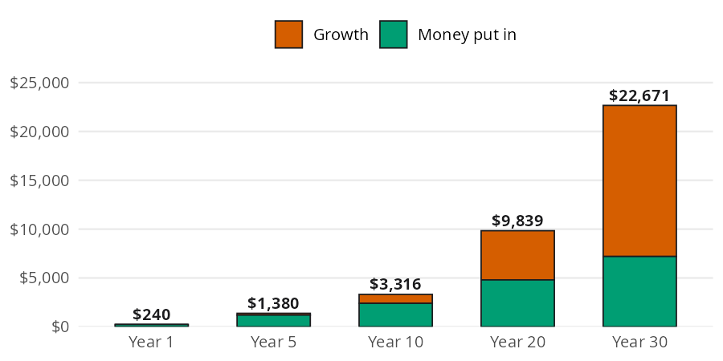

bank_statement <- data.frame(
Date = as.Date(c(
"2026-01-02", "2026-01-02", "2026-01-03", "2026-01-03",
"2026-01-04", "2026-01-04", "2026-01-05", "2026-01-06",
"2026-01-07", "2026-01-08", "2026-01-09", "2026-01-10",
"2026-01-11", "2026-01-12", "2026-01-13", "2026-01-14",
"2026-01-15"
)),
Description = c(
"Employer Payroll", "Rent",
"Comcast Internet", "Trader Joe's",
"Shell Gas", "Netflix",
"Starbucks", "PG&E Electric",
"AT&T Wireless", "Spotify",
"Whole Foods", "Chipotle",
"Geico Auto Insurance", "NYTimes Digital",
"Shell Gas", "Costco",
"24 Hour Fitness"
),
Amount = c(
2400.00, -1500.00,
-75.00, -82.45,
-45.20, -15.99,
-6.75, -142.30,
-85.00, -10.99,
-64.12, -14.50,
-125.00, -17.00,
-42.80, -156.78,
-39.99
)
)A bank export tells you every dollar that left your account, but it doesn’t tell you where your money went. To answer that, each transaction needs a category, and the small recurring charges need a second look. The Tracking Spending chapter of the book covers both questions. In this vignette I’ll answer them with two perfinr functions. apply_rules() sorts transactions into buckets. subscription_opportunity_cost() shows what a subscription would have grown to if you had invested the money instead.
| Function | Returns | Units |
|---|---|---|
apply_rules() |
the transactions with a Category column added |
text categories; "Other" when nothing matches |
subscription_opportunity_cost() |
what the yearly cost grows to if invested | dollars; rate is a decimal (0.07 is 7%) |
Where did the money go?
The book starts with a January 2026 bank export. It has the three columns most banks include: Date, Description, and Amount (negative for money going out, positive for money coming in). The code below builds the same statement as a base R data.frame:
The statement has 17 transactions and no Category column. To add one, we map each description to a bucket with a lookup table of keyword patterns. Each Pattern is a regular expression (a text search pattern), so | means “or” and one rule can cover several merchants:
rules <- data.frame(
Pattern = c("Payroll", "Rent", "Comcast|PG&E|AT&T",
"Trader Joe|Whole Foods|Costco", "Shell",
"Starbucks|Chipotle",
"Netflix|Spotify|NYTimes|24 Hour Fitness", "Geico"),
Category = c("Income", "Housing", "Utilities", "Groceries",
"Transportation", "Dining", "Subscriptions", "Insurance")
)apply_rules() checks the 8 rules in order against each description and keeps the first match. The table below shows each transaction next to the bucket it landed in:
categorized <- apply_rules(df = bank_statement, rules = rules)
categorized[, c("Description", "Amount", "Category")]
#> Description Amount Category
#> 1 Employer Payroll 2400.00 Income
#> 2 Rent -1500.00 Housing
#> 3 Comcast Internet -75.00 Utilities
#> 4 Trader Joe's -82.45 Groceries
#> 5 Shell Gas -45.20 Transportation
#> 6 Netflix -15.99 Subscriptions
#> 7 Starbucks -6.75 Dining
#> 8 PG&E Electric -142.30 Utilities
#> 9 AT&T Wireless -85.00 Utilities
#> 10 Spotify -10.99 Subscriptions
#> 11 Whole Foods -64.12 Groceries
#> 12 Chipotle -14.50 Dining
#> 13 Geico Auto Insurance -125.00 Insurance
#> 14 NYTimes Digital -17.00 Subscriptions
#> 15 Shell Gas -42.80 Transportation
#> 16 Costco -156.78 Groceries
#> 17 24 Hour Fitness -39.99 SubscriptionsEvery transaction found a bucket, so nothing fell through to "Other". With a Category column in place, the tracking questions from the book become one line of base R. The code below totals each category:
totals <- aggregate(Amount ~ Category, data = categorized, FUN = sum)
totals
#> Category Amount
#> 1 Dining -21.25
#> 2 Groceries -303.35
#> 3 Housing -1500.00
#> 4 Income 2400.00
#> 5 Insurance -125.00
#> 6 Subscriptions -83.97
#> 7 Transportation -88.00
#> 8 Utilities -302.30Subscriptions took $83.97 in the first half of January. That total is small next to rent, but it repeats every month, which is why the next section looks at it more closely.
When a transaction doesn’t match
New merchants show up every month. The book’s rule is “when in doubt, Other.” A transaction that matches no pattern lands in "Other" until you’ve seen it often enough to deserve its own rule. The code below runs two new transactions through the same rules:
new_transactions <- data.frame(
Description = c("Venmo Payment", "SPOTIFY FAMILY PLAN")
)
apply_rules(df = new_transactions, rules = rules)
#> Description Category
#> 1 Venmo Payment Other
#> 2 SPOTIFY FAMILY PLAN SubscriptionsThe Venmo payment falls through to "Other". The Spotify charge still lands in "Subscriptions" because apply_rules() ignores case, so "Spotify" matches "SPOTIFY".
What does a subscription really cost?
A subscription’s real cost is its opportunity cost: the money you give up by spending instead of investing. The book’s example is a monthly subscription you don’t really use, with the money invested instead at a real return (the return after inflation). The code below stores the book’s inputs:
monthly_cost <- 20
years <- 30
rate <- 0.07Canceling the $20 a month subscription frees up $240 a year to invest at 7% for 30 years. The chart below shows what that money grows into at each checkpoint, split into the money you put in and the growth it earned.

Each bar adds another year’s deposit to everything saved so far, and the whole pile grows by 7%. subscription_opportunity_cost() adds up every year’s deposit and its growth in one step:
sub_cost <- subscription_opportunity_cost(
monthly_cost = monthly_cost,
years = years,
rate = rate
)
sub_cost
#> [1] 22670.59Over 30 years you put in $7,200, and growth adds $15,471 on top of it. That “small” $20 a month is a $22,671 decision.
Comparing horizons
subscription_opportunity_cost() is vectorized, so one call can fill in every bar of the chart above. The code below puts the five checkpoints in a data.frame with the money put in and the growth:
checkpoints <- c(1, 5, 10, 20, 30)
horizons <- data.frame(
years = checkpoints,
put_in = monthly_cost * 12 * checkpoints,
value = round(subscription_opportunity_cost(monthly_cost, checkpoints, rate), 2)
)
horizons$growth <- horizons$value - horizons$put_in
horizons
#> years put_in value growth
#> 1 1 240 240.00 0.00
#> 2 5 1200 1380.18 180.18
#> 3 10 2400 3315.95 915.95
#> 4 20 4800 9838.92 5038.92
#> 5 30 7200 22670.59 15470.59Growth is $180 after 5 years and $15,471 after 30. Most of the cost of a subscription shows up late, which is exactly when you’ve stopped noticing the charge.
Limits
apply_rules(): the first matching rule wins, so put specific patterns above general ones. Patterns are regular expressions with case ignored, so characters like.,+, and(have special meanings. The function only readsDescription; a Netflix refund lands in"Subscriptions"just like the charge. An existingCategorycolumn is replaced.subscription_opportunity_cost(): it invests the yearly total once, at the end of each year, at one fixed rate. The book’s $267,000 figure for $219 a month assumes monthly deposits, so it comes out higher than this function’s result for the same inputs. The 7% default is a real return, so the result is in today’s dollars. It does not reject negative costs.
Putting it together
The book’s monthly review ends with a subscription audit: list every recurring charge and decide whether it’s worth the cost. The categorized statement already holds that list. The code below pulls the subscription rows and prices each one over the same horizon:
subs <- categorized[categorized$Category == "Subscriptions", ]
audit <- data.frame(
Description = subs$Description,
monthly = -subs$Amount,
cost_30 = round(subscription_opportunity_cost(-subs$Amount, years = years), 2)
)
audit
#> Description monthly cost_30
#> 1 Netflix 15.99 18125.14
#> 2 Spotify 10.99 12457.49
#> 3 NYTimes Digital 17.00 19270.00
#> 4 24 Hour Fitness 39.99 45329.84
sum(audit$cost_30)
#> [1] 95182.47These 4 subscriptions cost $83.97 a month, which adds up to $95,182 over 30 years. To put the monthly total in context, percent_of_income() from the Budgeting vignette compares it with the paycheck on the statement:
paycheck <- categorized$Amount[categorized$Category == "Income"]
percent_of_income(expense = sum(audit$monthly), income = paycheck)
#> [1] 3.49875Subscriptions take about 3.5% of the paycheck. As in the rest of perfinr, the ratio comes out as a percent, not a decimal (see the conventions in perfinr). The gym membership alone accounts for $45,330 of the 30 year total. That makes it the first one to check against the book’s audit question: have you used it in the last 30 days?
Recap
apply_rules() turns a bank export into categorized spending with a small, stable table of keyword patterns, and anything new falls through to "Other". subscription_opportunity_cost() puts a price on recurring charges by showing what the money would grow to if invested. Together they cover the recording side of personal finance, which feeds the allocation decisions in Budgeting.